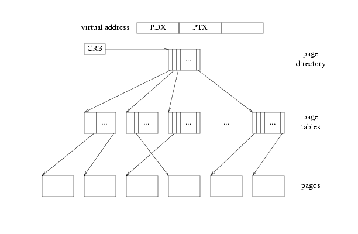
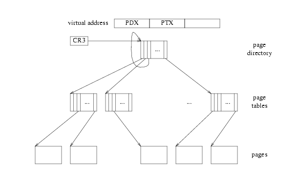

This page describes a neat trick that JOS uses by exploiting the paging hardware-- the paging hardware is great for putting together a set of fragmented pages into a contiguous address space. And it turns out we already have a table with pointers to all of our fragmented page tables: it's the page directory!
So, we can use the page directory as a page table to map our conceptual giant 2^22-byte page table (represented by 1024 pages) at some contiguous 2^22-byte range in the virtual address space. And we can ensure user processes can't modify their page tables by marking the PDE entry as read-only.
Puzzle: do we need to create a separate UVPD mapping too?
Remember how the X86 translates virtual addresses into physical ones:

CR3 points at the page directory. The PDX part of the address indexes into the page directory to give you a page table. The PTX part indexes into the page table to give you a page, and then you add the low bits in.
But the processor has no concept of page directories, page tables, and pages being anything other than plain memory. So there's nothing that says a particular page in memory can't serve as two or three of these at once. The processor just follows pointers: pd = lcr3(); pt = *(pd+4*PDX); page = *(pt+4*PTX);
Diagramatically, it starts at CR3, follows three arrows, and then stops.
If we put a pointer into the page directory that points back to itself at index V, as in

then when we try to translate a virtual address with PDX and PTX equal to V, following three arrows leaves us at the page directory. So that virtual page translates to the page holding the page directory. In Jos, V is 0x3BD, so the virtual address of the UVPD is (0x3BD<<22)|(0x3BD<<12).
Now, if we try to translate a virtual address with PDX = V but an arbitrary PTX != V, then following three arrows from CR3 ends one level up from usual (instead of two as in the last case), which is to say in the page tables. So the set of virtual pages with PDX=V form a 4MB region whose page contents, as far as the processor is concerned, are the page tables themselves. In Jos, V is 0x3BD so the virtual address of the UVPT is (0x3BD<<22).
So because of the "no-op" arrow we've cleverly inserted into the page directory, we've mapped the pages being used as the page directory and page table (which are normally virtually invisible) into the virtual address space.